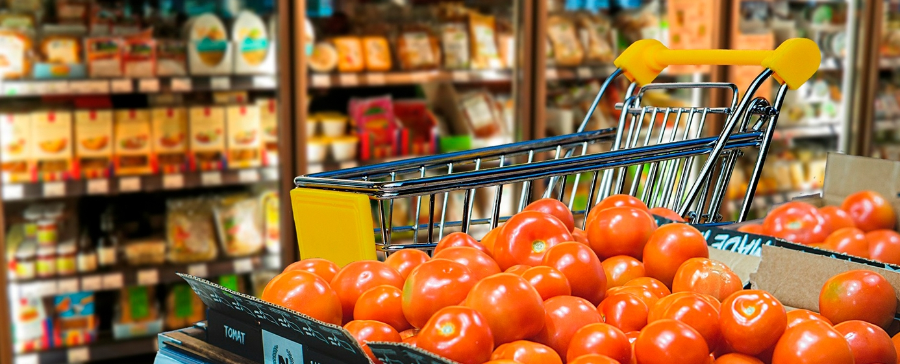
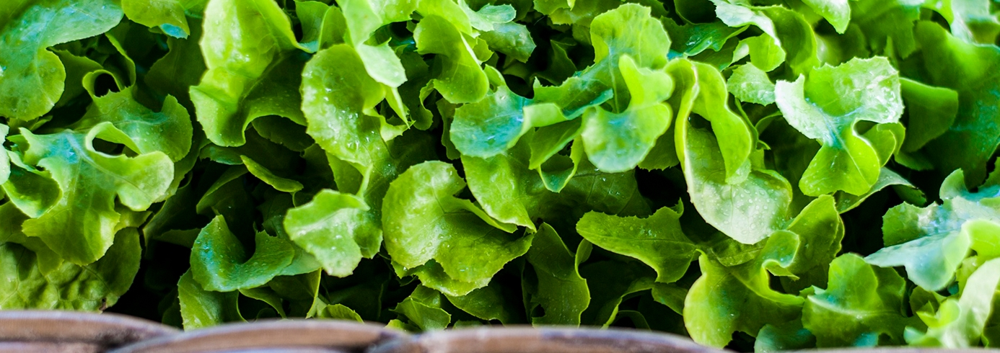

Populárne články

Tipy na zdravé stravovanie s obmedzeným rozpočtom
Jednou z výziev, s ktorými sa môžeme stretnúť pri prechode na zdravý životný štýl, je zvažovanie nákladov na stravu. Kvalitné potraviny totiž často nepatria k tým najlacnejším, čo môže sťažovať dodržiavanie zásad zdravého stravovania – obzvlášť vtedy, ak študujete alebo pracujete len na čiastočný úväzok.

Čo presne znamená „čisté stravovanie“?
Zdravé stravovanie znamená konzumáciu minimálne spracovaných, výživných produktov bez prísad – potravín ako čerstvá zelenina a strukoviny, celozrnné obilniny, ovocie a chudé mäso. Bohužiaľ, to, čo nám často môže brániť v kúpe týchto kvalitnejších potravín, je cena – zdravé a kvalitné produkty môžu byť často drahšie ako menej zdravé alternatívy, najmä ak sú označené ako „bio“. Zdravé stravovanie s obmedzeným rozpočtom je však možné! Vyžaduje si to len určitý prieskum, plánovanie dopredu a dodržiavanie jedálnych lístkov.
Tipy na zdravé stravovanie s obmedzeným rozpočtom
Chcete vedieť, ako sa stravovať zdravo a čisto bez toho, aby ste minuli všetky peniaze? Riaďte sa týmito jednoduchými tipmi, ktoré vám pomôžu jesť zdravo a zároveň dodržať váš rozpočet.
Tip 1. Vyberte si obchod s potravinami rozumne
Stalo sa vám už niekedy, že ste vošli do obchodu s potravinami a uvideli tam ten istý tovar, ktorý ste si nedávno kúpili, no za polovičnú cenu? Hoci to môže byť poriadne frustrujúce, dá sa to využiť vo váš prospech. Urobte si malý prieskum – navštívte miestne farmárske trhy, obchody so zdravou výživou, menšie potravinové reťazce či bežné obchody – a porovnajte si v nich ceny. Časom zistíte, kde nájdete najlepšiu kvalitu a najvýhodnejší pomer ceny a hodnoty, vďaka čomu sa môžete rozhodnúť nakupovať potraviny práve tam častejšie.
Dostupné typy obchodov s potravinami sa líšia v závislosti od toho, kde bývate. Platí však, že čím dôkladnejšie si urobíte prieskum predtým, než sa rozhodnete pre konkrétny obchod, ktorý budete pravidelne navštevovať, tým lepšie. Niekedy môže byť obchod, ktorý máte najbližšie či najviac „po ruke“, finančne menej výhodný než iné možnosti, čo vás z dlhodobého hľadiska môže vyjsť drahšie.
Tip 2. Zvoľte si lacnejšie značky
Značky obchodných reťazcov často ponúkajú produkty rovnakej kvality, no môžu byť výrazne lacnejšie. Pamätajte, že vyššia cena nemusí vždy znamenať lepšiu kvalitu! Hoci sa vzhľad či chuť môžu medzi jednotlivými značkami líšiť, v prípade „čistých“ potravín sú tieto rozdiely často minimálne.
Tip 3. Na surovinách záleží!
Vyhľadávajte ovocie a zeleninu, ktoré sú práve v sezóne a dostupné vo vašom regióne – ak sa predávajú mimo svojho prirodzeného obdobia, bývajú zvyčajne drahšie. Vyžaduje si recept suroviny, ktoré vo vašej oblasti práve nie sú v sezóne? Skúste ich nahradiť niečím podobným, čo je práve aktuálne dostupné. Jedlo bude navyše pravdepodobne chutiť lepšie, keďže použité suroviny budú v tej najlepšej kvalite!
Tip 4. Nenechajte sa oklamať označeniami „bio“
Výrobok, ktorý na základe textu či obrázkov na obale pôsobí dojmom, že je „bio“ (ekologický), ním v skutočnosti vôbec nemusí byť! Pri výbere produktov, ktoré sa tvária ako „bio“, buďte preto obozretní. Tento výraz sa totiž niekedy používa len na to, aby výrobok v porovnaní s konkurenciou vyzeral zdravšie, hoci v skutočnosti nemá oficiálny certifikát potvrdzujúci jeho bio pôvod. Získanie takejto certifikácie si vyžaduje komplexný proces, počas ktorého nezávislá certifikačná organizácia dôkladne preveruje danú spoločnosť.
Navyše, niektoré potraviny sa bežne vyrábajú s menším množstvom chemikálií (alebo úplne bez nich), takže kúpa drahšej „bio“ verzie nemusí byť vždy opodstatnená. Kľúčové je zistiť si informácie o spôsobe výroby vašich potravín a pri nakupovaní na to brať ohľad. Vďaka tomu sa môžete rozhodnúť pre bio variant vtedy, keď to považujete za potrebné – a nie preto, že vás k tomu nabáda označenie na obale.
Tip 5. Väčšie množstvo je najlepšie!
Ak viete, že nejakú potravinu konzumujete často a má dlhú trvanlivosť, nakupujte ju vo väčšom množstve. Napríklad zdravé oleje alebo obilniny sa oplatí kupovať vo veľkých baleniach, keďže ich pri príprave „čistých“ (zdravých) jedál pravdepodobne využijete často. Keď začnete meniť svoj jedálniček, môže sa zdať, že vaše výdavky na potraviny sú vyššie než zvyčajne. Počas prvých nákupov totiž budete dopĺňať základné suroviny, ktoré vám vydržia dlhý čas. Akonáhle však budete mať zásoby doplnené, zistíte, že nákupy potravín sú lacnejšie a možno už nebudete musieť chodiť do obchodu tak často!
Tip 6. Pri príprave jedla postupujte rozumne
Keď si nakúpite potraviny, určite nechcete mať doma toľko jedla, že sa začne kaziť skôr, než ho stihnete pripraviť. Aby ste tomu predišli, pripravte sa ešte pred nákupom! Skôr než vyrazíte do obchodu, spíšte si zoznam jedál, ktoré budete počas týždňa jesť, a nezabudnite pritom zohľadniť ani žiadne spoločenské udalosti, ktoré vás v danom týždni čakajú. Následne si premyslite, aké suroviny budete na jednotlivé jedlá potrebovať. Ak plánujete jedlá podľa receptov, všímajte si počet porcií a zvážte, či je to pre váš týždenný plán reálne.
Pokiaľ ide o varenie, môžete naplno využiť všetky suroviny a pripraviť si jedlo vopred. Ak recept uvádza, že je určený pre dve osoby, zvyšné porcie si odložte na iný deň. Niekedy sa totiž stáva, že aj keď v recepte znížite počet porcií, aj tak musíte nakúpiť všetky suroviny potrebné na prípravu celého množstva. Namiesto toho, aby vám vznikol odpad, je lepšie pripraviť recept v plnom rozsahu – získate tak jedlo na ďalšie dni, čo vám z dlhodobého hľadiska môže ušetriť peniaze!
Tip 7. Ušetrite, čo sa dá
Niekedy sa plány zmenia a vy zistíte, že nestihnete zjesť všetko ovocie a zeleninu, ktoré ste nakúpili. Nájdite si chvíľku, nakrájajte ich, vložte do uzatvárateľných nádob alebo vreciek a dajte zamraziť. Neskôr ich môžete využiť napríklad do smoothie alebo do jedál pripravovaných na panvici (typu „stir-fry“).
Zdravé stravovanie nemusí zruinovať váš rozpočet
Zdravé stravovanie nemusí znamenať, že miniete všetky svoje ťažko zarobené peniaze na tie najdrahšie bio produkty či superpotraviny. Niekedy stačí len zopár drobných zmien, vďaka ktorým ušetríte nemalé sumy a zároveň si udržíte zdravie.

Ako odmerať veľkosť porcií
pomocou rúk
Prečítať článok

Stručný sprievodca intuitívnym
stravovaním
Prečítať článok

Vodná bilancia, význam
správnej hydratácie
Prečítať článok

Ako kúpiť tie najlepšie
nohavice na jogu
Prečítať článok

Ako byť viac
Disciplinovaný
Prečítať článok

5 wellness trendov, ktoré si zamilujete
Uvidíme sa v roku 2019
Prečítať článok

Kokosový olej na vlasy, ktoré
Žiari
Prečítať článok